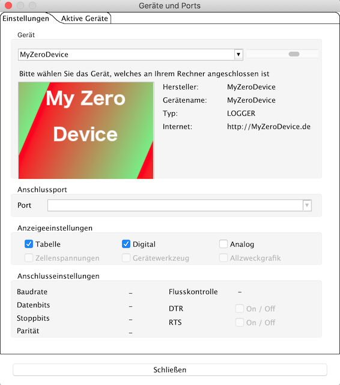

Die Möglichkeit, CSV-Dateien, die dem "LogView OpenFormat Zero" folgen, zu importieren und auszuwerten, werden durch den ZeroAdapter gegeben.
Vermutlich wird der Name ZeroAdapter nicht zum Projekt passen. Dennoch sollte man seine CSV-Datei, beliebiger Dateiendung, erst einmal mit dem ZeroAdapter einlesen. Dadurch wird eine Geräte-Konfigurations-Datei, entsprechend der in der Datei befindlichen Konfiguration, passend zu den Daten, aufgebaut. Jetzt kann man das Programm DataExplorer beenden, um weiter Anpassungen für sein Projekt vornehmen.
Erst jetzt sollte man den Namen der Geräte-Konfiguration passend zum Projekt ändern. Die ZeroAdapter.xml Datei befindet sich im Ordner in dem Programmeinstellungen gesichert werden.
Die Stellen, an denen eine Anpassung sinnvoll erscheint sind markiert. Der Gerätename muss zum Namen der XML Datei passen.
Wird der Name des Gerätes, hier "MyZeroDevice", geändert, wird später dieser Name in der Geräteauswahl angezeigt.

Möchte man sein eigenes Symbol bei der Geräteauswahl sehen, kann eine Bilddatei, 235x165 Bildpunkte groß, direkt in den Ordner kopiert werden, in dem sich auch die Geräte-Konfigurations-Datei befindet. Bitte nicht vergessen die Bildreferenz über den Namen in der Geräte XML anzupassen.

Auch der Gerätedialog wird der Namensgebung folgen. Der gezeigte Dialog dient zur Konfiguration der Anzeige der ausgelesenen Daten. Es könnten die Messwertnamen, Messwertsymbole und Messwerteinheiten angepasst werden. Das macht aber keinen Sinn, da diese Namen durch die Konfiguration innerhalb der Log-Datei vorgegeben werden. Lediglich Ergänzungen könnte man vornehmen. Kommen Messwerte, wie z. B. Längen- und Breitengrad, vor und man möchte diese in der Kurvendarstellung nicht zeigen, können diese durch den ganz linken Schalter abgewählt werden. Nicht selektierte Messgrößen erscheinen dann temporär nicht in der grafischen Anzeige. Andererseits, werden Kurven durch fehlende Daten ausgeblendet, kann man das durch zweifache Selektion überprüfen. Über einen Dateiauswahldialog, erreichbar über "importiere Datei", können auch neue Dateien eingelesen werden. Kurven, die keine sinnvollen Daten enthalten, werden automatisch ausgeblendet. Bei vorhandenen GPS-Koordinaten werden Exportmöglichkeiten eingeblendet. So z. B. als Google Earth-Dateien (KMZ), bzw. KML können direkt angezeigt werden. Nähere Beschreibung dazu siehe Toolbar -> Google Earth.
Am rechten Rand der Anzeigenkonfiguration befindet sich ein zusätzlicher Schalter, der eine halbautomatische Synchronisation der Skalen ermöglicht. Wird hier selektiert, wird auf die ersten vier Buchstaben des Namens, und der Einheiten auf Übereinstimmung Geprüft. Bei entsprechender Übereinstimmung wird in der Gerätekonfigurationsdatei bei den Messwerten die entsprechende Eigenschaft eingesetzt. Eine Synchronization bezieht sich immer auf den zuerst gefundenen Messwert und wird durch eine Referenz auf dessen Ordinalzahl gesetzt. Die Refernz-Ordinalzahl wird am rechten Rand angezeigt, um zu erkennen auf welchen Messwert synchronisiert wird. Dieser Messwert kann nicht auf sich selbst referenzieren und kann entsprechend auch nicht selektiert werden. Funktioniert das nicht automatisch, bleibt immer noch die Möglichkeit das manuell über den Gerätekonfigurationseditor einzustellen. Durch Skalensynchronisation wird die verfügbare Anzeigefläche vergrößert und es können Messwertaufnehmer direkt verglichen werden, ohne den Kurvenvergleich zu benutzen.
Über den Geräteeigenschafteneditor kann man bei beliebigen Messkurven eine Skalensynchronisation konfigurieren. Sinn macht das Ganze aber nur, wenn die Wertebereiche zusammenpassen. Um die vollen Möglichkeiten des DataExplorers mit den statistischen Auswertungen auszuschöpfen siehe Fenster "Statistik".
Hinweis: Es macht keinen Sinn Messwertnamen zu ändern. Messwertnamen, Einheit und Symbol kommen ja über die Konfiguration des Datensatzes am Anfang der Openfromat Zero Datei. Ändert sich in einer späteren DataExplorer-Version das Gerätekonfigurationsdateischema (DeviceProperties_Vxy.xsd), wird eine Sicherung aller vorhandenen Gerätekonfigurationsdateien angelegt (Devices_Vxy-1) und es geht nichts verloren. Durch einfaches ändern der Versionsnummer der Schemareferenz kann man Gerätekonfigurationsdateien einfach übernehmen. Hinweise zu LogView OpenFormat Zero findet man im Internet.